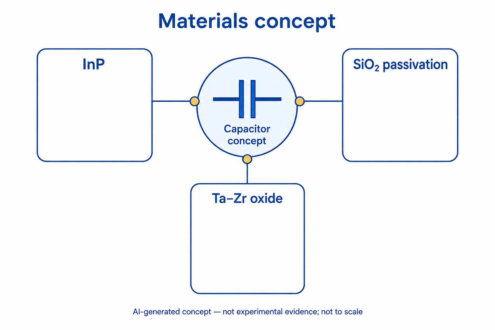

연구 개요
현재 연세대학교 BLISS Lab을 이끄는 서정목 교수가 연세대학교 전기전자공학부 소속일 때 공저자로 참여한 연구로, 원자층 증착(ALD)으로 형성한 얇은 이산화규소(SiO2) 층이 Zr을 첨가한 탄탈럼 산화물(Ta1−xZrxO) 게이트 유전막을 쓰는 인화인듐(InP) 금속-산화물-반도체(MOS) 커패시터를 개선하는지 확인했습니다. SiO2 중간층은 계면층을 얇게 하고 In·P의 외부 확산을 억제했으며, 100 Hz–100 kHz 범위의 축적 영역 정전용량 분산을 21.1%에서 11.3%로 줄였습니다.
연구 배경
InP와 같은 III–V 반도체는 Si보다 전자 이동도가 높지만, III–V 기판 위의 고유전율 산화막은 결함이 많은 계면을 형성해 계면 트랩 밀도(Dit)가 높고 페르미 준위가 고정되는 문제가 있습니다. Ta2O5는 유전상수가 높으나 열적 안정성이 낮고 산소 공공 결함이 생기며, 증착이나 열처리 중 고유전율 층을 통해 확산된 In은 소자 성능을 떨어뜨립니다. 기존 패시베이션 방법은 열처리 중 자연 산화막 성장을 막거나 Dit를 효과적으로 낮추지 못했습니다.
설계와 접근
이 연구는 두 가지 방법을 함께 적용했습니다. 먼저 ALD 슈퍼사이클(250 °C에서 Ta2O5 8사이클당 ZrO2 1사이클)로 Ta2O5에 Zr을 첨가해 Ta : Zr 비를 3 : 2로 맞추고 산소 공공을 보상했습니다. 이어 유전막과 InP 사이에 5사이클 또는 10사이클의 ALD SiO2 중간층을 넣어 계면층 성장을 제어했습니다. Si를 도핑한 (100) n-InP(3–5 × 10^17 cm−3)는 증착 전 1% 불산과 21% (NH4)2S로 처리했고, 적층 후 N2 분위기 500 °C에서 20초간 후열처리했으며, 게이트 전극으로는 TaN을 사용했습니다.

AI로 만든 비축척 개념도입니다. InP 커패시터, SiO₂ 패시베이션과 Ta–Zr 산화물의 재료 관계를 표현했습니다. 카드와 선은 재료 간의 관계를 나타내며 실제 적층, 원자·분자 구조, 조성비, 배선이나 성능을 재현하지 않습니다.
설계 개념을 설명하기 위해 이 자료실에서 생성한 개념도로, 논문 원그림이 아니며 측정 데이터를 나타내지 않습니다.
평가 방법
SiO2가 없는 Ta1−xZrxO/InP 커패시터와 Ta1−xZrxO/SiO2/InP 커패시터를 비교했습니다. 계면은 단면 고분해능 투과전자현미경(HR-TEM)과 에너지 분산 X선 분광(EDS), 그리고 Ar 스퍼터링 깊이 분석을 결합한 In 3d5/2·P 2p·Si 2p 내각 준위 X선 광전자 분광(XPS)으로 열처리 전후에 분석했습니다. 전기적 특성은 다중 주파수 정전용량-전압(C–V) 측정, 정규화 병렬 컨덕턴스 맵, 0–3.5 MV cm−1 범위의 누설전류 측정으로 평가했습니다.
연구 내용과 주요 결과
SiO2가 없을 때 9.2 nm 게이트 적층은 6.5 nm Ta1−xZrxO와 2.7 nm 계면층으로 이루어졌고, EDS에서는 Zr 첨가만으로 유전막 내 In 확산을 막지 못했습니다. 막은 500 °C 열처리 뒤에도 절연성과 열적 안정성을 유지했고 계면 산화도 뚜렷하게 늘지 않았습니다. SiO2 중간층을 넣으면 Ta1−xZrxO 두께는 유지되면서 계면층 두께가 크게 줄었으며, 저자들은 In/P 산화물의 산소가 Si와 결합하기 때문으로 해석했습니다. XPS에서는 In/P–O–Si 규산염 성분이 확인되었고, Si 2p 스펙트럼은 Si–O 결합을, P 2p 스펙트럼은 유전막으로의 P 확산이 무시할 수준임을 보여 주었습니다.
패시베이션하지 않은 적층은 100 Hz에서 정전용량 등가 두께(CET) 1.8 nm, 유전상수 약 20을 보였지만, 평탄대 전압이 약 570 mV로 컸고 저자들은 이를 In 확산과 연결했습니다. 컨덕턴스 맵에서도 뚜렷한 피크가 없어 페르미 준위 고정이 확인되었습니다. SiO2를 넣으면 축적 영역 분산이 21.1%에서 11.3%(100 Hz–100 kHz)로 줄고, 평탄대 전압이 낮아졌으며, 1 MHz의 최소 반전 정전용량이 이상값에 가까워졌고, 더 낮고 좁은 컨덕턴스 피크로 Dit 감소가 나타났습니다. 패시베이션한 적층의 전도대 근처 0.27 eV에서 Dit는 4 × 10^12 cm−2 eV−1였습니다. 패시베이션하지 않은 적층은 qDit가 Cox보다 커서 컨덕턴스법이 Dit를 한 자릿수 과대평가할 수 있으므로, 저자들은 같은 방식으로 신뢰할 만한 값을 얻기 어렵다고 보았습니다.
1 MV cm−1에서의 누설값은 SiO2가 없을 때 3.2 × 10−10, SiO2 5사이클과 10사이클에서 각각 8.2 × 10−12와 8.3 × 10−13으로 줄었고(본문은 단위를 Å로 표기), SiO2가 두꺼워질수록 누설전류가 감소했습니다. SiO2가 없을 때는 트랩 보조 Poole–Frenkel(P–F) 터널링이 지배적이었고, 패시베이션한 커패시터는 0.75 MV cm−1(5사이클) 또는 1.2 MV cm−1(10사이클) 이하에서 트랩 보조 또는 P–F 터널링, 그 이상에서 Fowler–Nordheim(F–N) 터널링을 보였습니다.
남은 과제
저자들은 SiO2 패시베이션 후 유효 유전상수가 낮아지지만 전기적 특성 개선을 고려하면 받아들일 수 있는 절충이라고 밝혔습니다. 또한 패시베이션한 적층에서 긴 스퍼터링 뒤 P 산화물 신호가 더 강하게 나타난 원인은 불확실하다고 적었습니다.
함께 읽을 연구
Emerging Applications for High K Materials in VLSI Technology
관련 리뷰의 초록은 CMOS와 메모리에서 높은 유전율의 유전체와 원자층 증착(ALD)을 사용하는 방법을 정리합니다. 이 연구의 소자 구조를 이해하기 위한 배경 자료입니다.
초록을 참고한 소개RESEARCH NEWS
연구 소식
해설에 사용한 자료
이 해설은 출판사 게재본 PDF의 본문, 실험 방법, 그림 1–8 설명을 바탕으로 했으며, 전자 보충자료(Fig. S2와 CET 계산)는 검토하지 않았습니다.